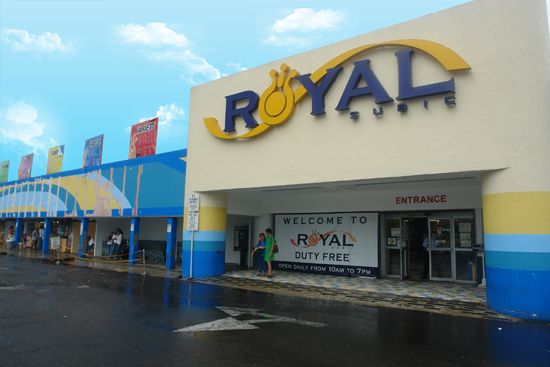
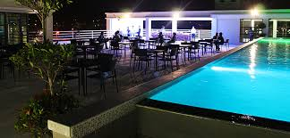

Olongapo City Establishments
List
Olongapo Mobile Locator
This our beautiful establishment in Olongapo City


Olongapo was a small fishing village on the eastern shores of Subic Bay. It was one of the villages that dotted Subic Bay,
having such musical names as Tibawa, Ilalim, Naglubid, Diliwariw, Banicain, Boton, Binictican, Ilingin, Maquinaya.
Legend has it that the peaceful village of Olongapo was ruled by a benevolent man called Apo.
The peace of the village was disrupted by a band of goons who sowed fear and terror among the simple folk.
These bandits beheaded the Apo and took off with his head. The villagers were struck with fear and could not be appeased until a young man appeared out of the jungle one day. He carried in his arms the head of the revered old man which he found impaled on a bamboo pole.
The villagers shouted with joy 'Ulo ng Apo!Ulo ng Apo!' Now they could give the remains of their beloved Apo an honorable burial.
And in his honor, the village became known as Olongapo!